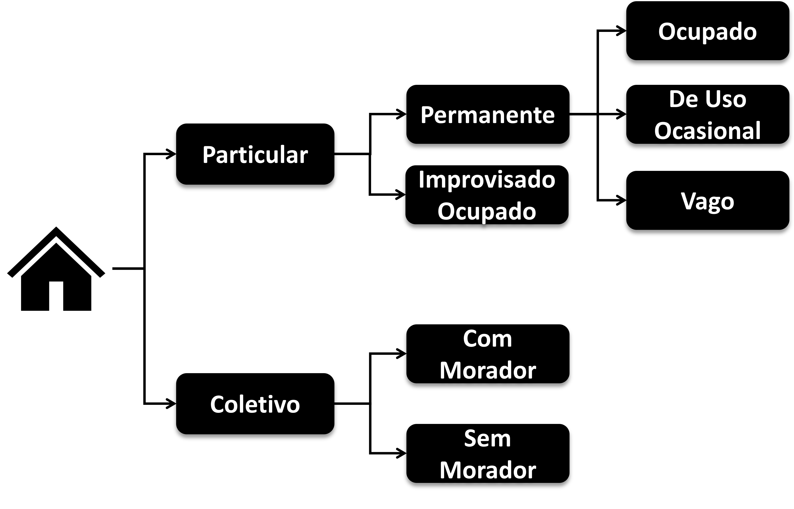
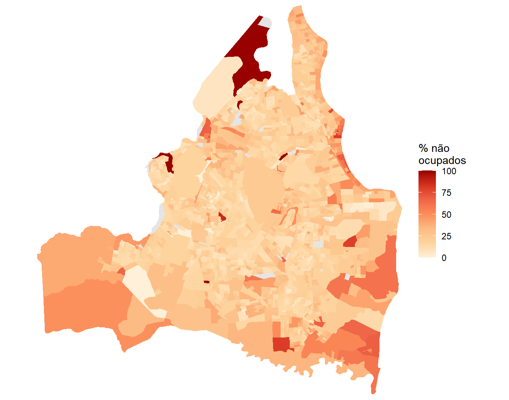
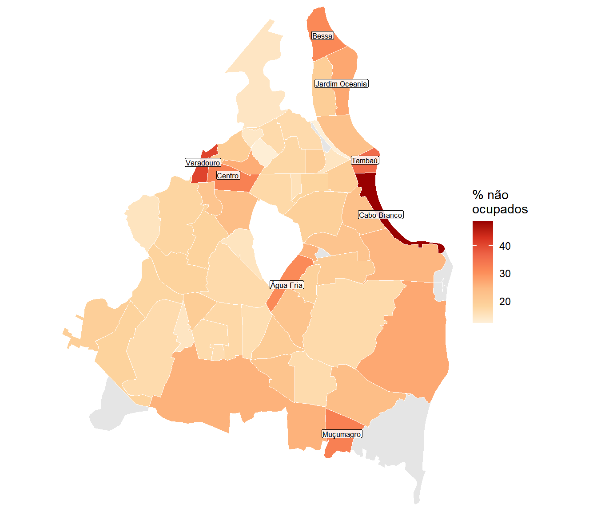
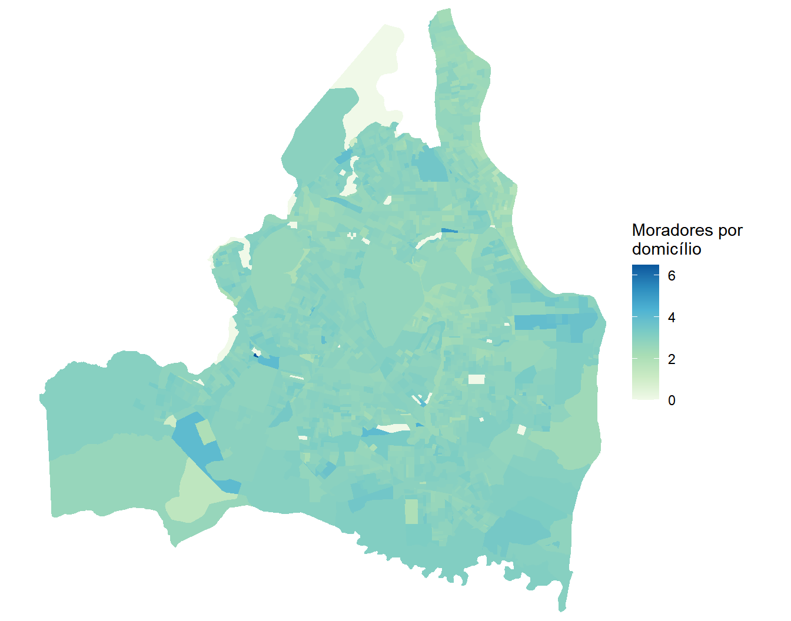
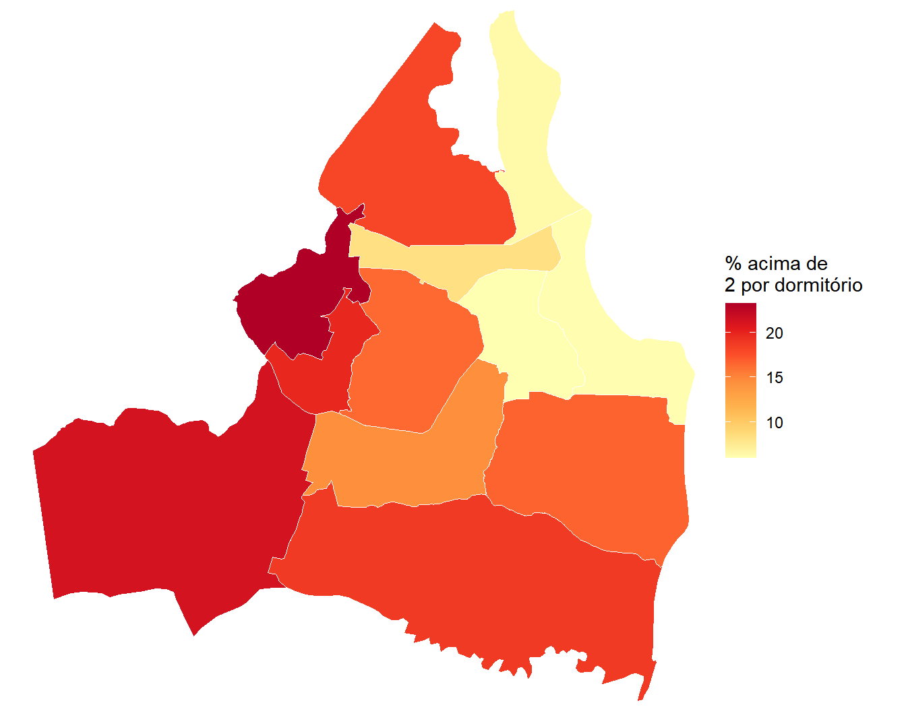
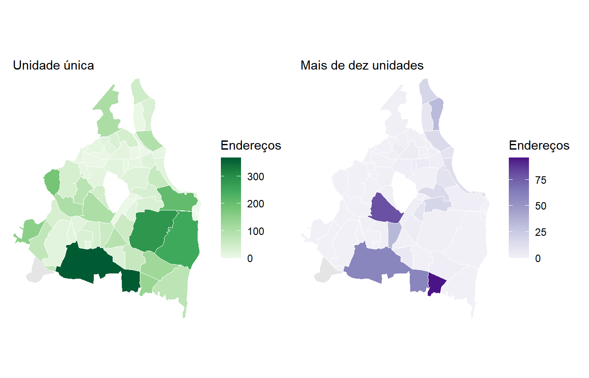

library(tidyverse)
library(censobr)
library(cnefetools)
library(geobr)
library(sf)
library(srvyr)
library(patchwork)13 Habitação
13.1 Introdução
Analisar a questão habitacional de uma cidade começa por descrever seu estoque de moradias e a forma como as pessoas vivem nele. Quantos domicílios existem, de que tipo são, quantos estão ocupados, quantas pessoas há dentro de cada um e onde estão surgindo novas construções são perguntas descritivas que antecedem qualquer diagnóstico. Respondê-las com detalhe espacial é o que permite enxergar situações bastante distintas dentro de um mesmo município, que a média municipal esconde.
O Censo Demográfico é a fonte que viabiliza esse nível de desagregação para qualquer município brasileiro, com definições padronizadas que tornam as cidades comparáveis entre si e, dentro de certos limites, ao longo do tempo. Ele não esgota o tema, porque muitas dimensões da questão habitacional, como preço, posse e condição jurídica do imóvel, ficam fora do questionário. O que ele oferece é a base descritiva sobre a qual essas outras discussões costumam se apoiar.
Este capítulo constrói esse retrato em três frentes. A primeira descreve o estoque existente e sua ocupação, ou seja, quantos domicílios há, de que tipo, e quantos estão sem morador. A segunda olha para dentro do domicílio ocupado e mede quantas pessoas dormem em cada dormitório. A terceira pergunta para onde a cidade está crescendo. As três exigem produtos diferentes do Censo, e nenhum deles responde sozinho. Os agregados por setor censitário informam quantos domicílios existem, quantos estão ocupados e quantas pessoas moram em cada um. Os microdados da amostra informam quantas pessoas dormem em cada dormitório, que é a medida de adensamento que interessa e que os agregados não trazem. O CNEFE informa onde havia obra em andamento no momento da coleta, e é a única fonte censitária que permite ter uma noção do estoque futuro.
Neste capítulo, conviveremos com três unidades espaciais e dois anos de referência distintos. Os agregados vêm por setor censitário em 2022, os microdados por área de ponderação em 2010 e o CNEFE vem em pontos de endereço em 2022. Lidaremos com estas limitações de maneira honesta sempre que formos discutir resultados integrando as diferentes bases.
O município escolhido é João Pessoa (PB), capital litorânea em que a proporção de domicílios sem morador é alta o suficiente para tornar o indicador especialmente ilustrativo.
Comecemos carregando os pacotes usados ao longo do capítulo1.
13.2 A lógica dos tipos de domicílio (um breve retorno)
Antes de organizar os dados, vale retomar um ponto do Capítulo 7 que aqui deixa de ser detalhe e passa a ser o centro da análise. Quase todo indicador habitacional construído a partir dos agregados é uma razão entre dois totais de domicílios, e acertar o numerador e o denominador exige saber exatamente o que cada total contém. A Figura 13.1 reproduz a árvore de classificação adotada pelo IBGE2.

A leitura da árvore começa pela distinção entre particulares e coletivos. Os particulares são aqueles em que a convivência se dá por laços de parentesco, dependência doméstica ou normas de convivência, e se dividem entre os permanentes, construídos para servir de moradia, e os improvisados, que ocupam edificações ou espaços sem finalidade habitacional. Os permanentes, por sua vez, admitem três situações na data de referência, com o domicílio ocupado, vago ou de uso ocasional. Os coletivos são estabelecimentos regidos por normas de subordinação administrativa, como quartéis, presídios e asilos, e aparecem com ou sem morador.
Esses nomes são longos e reaparecem o tempo todo na documentação, razão pela qual o IBGE trabalha com siglas. Elas estão reunidas na planilha Siglas_Basico, que é a primeira aba do dicionário aberto por data_dictionary(year = 2022, dataset = "tracts") e cujo conteúdo a Tabela 13.1 reproduz.
Siglas_Basico do dicionário dos Agregados por Setores Censitários.
| Sigla | Descrição |
|---|---|
| DPPO | Domicílio Particular Permanente Ocupado |
| DPIO | Domicílio Particular Improvisado Ocupado |
| DPPV | Domicílio Particular Permanente Vago |
| DPPUO | Domicílio Particular Permanente de Uso Ocasional |
| DCCM | Domicílio Coletivo Com Morador |
| DCSM | Domicílio Coletivo Sem Morador |
| DPO | Domicílio Particular Ocupado (DPPO + DPIO) |
Note que a última linha já é uma soma. O DPO não é uma categoria da árvore, e sim o agrupamento dos dois tipos de domicílio particular que tinham morador na data de referência. Essa é a chave para entender o restante, porque os totais de domicílio do arquivo Básico são definidos no dicionário exatamente nesses termos, e não em linguagem corrente. A Tabela 13.2 transcreve essas definições.
| Variável | Descrição | Composição |
|---|---|---|
V0002 |
Total de domicílios | DPPO + DPPV + DPPUO + DPIO + DCCM + DCSM |
V0003 |
Total de domicílios particulares | DPPO + DPPV + DPPUO + DPIO |
V0004 |
Total de domicílios coletivos | DCCM + DCSM |
V0005 |
Média de moradores em domicílios particulares ocupados | Pessoas em DPO / (DPPO + DPIO) |
V0006 |
Percentual de domicílios particulares ocupados imputados | DPO imputados / DPO |
V0007 |
Total de domicílios particulares ocupados | DPPO + DPIO |
Duas consequências práticas saltam dessa tabela e valem ser fixadas desde já. A primeira é que V0003 não conta todos os domicílios do setor, porque deixa os coletivos de fora, de modo que usá-lo como denominador de um indicador que fale de “domicílios” em geral seria incorreto. A segunda é que a diferença entre V0003 e V0007 tem um significado preciso, já que subtrair DPPO + DPIO de DPPO + DPPV + DPPUO + DPIO deixa como resto DPPV + DPPUO, ou seja, os domicílios permanentes vagos somados aos de uso ocasional. Voltaremos a essa subtração na Seção 13.4, e ela explica por que o indicador correspondente não pode ser chamado simplesmente de vacância.
Vale lembrar que essas definições estão detalhadas na nota metodológica dos Agregados por Setores Censitários (IBGE, 2024), que é a referência a consultar sempre que restar dúvida sobre o que um total específico inclui. Com o vocabulário reposto, podemos organizar os dados do capítulo.
13.3 Estruturação dos dados de agregados do Censo de 2022
Começamos pelos agregados, e tudo o que precisamos deles está no arquivo Básico. De lá vêm a população, dois dos totais de domicílio da Tabela 13.2 e a média de moradores, além do campo que identifica os setores de Favela e Comunidade Urbana. A Tabela 13.3 descreve o que será lido.
| Arquivo | Código original | Nome atribuído | Descrição |
|---|---|---|---|
| Básico | V0001 |
pop |
População total residente |
| Básico | V0003 |
dom_part |
Total de domicílios particulares (ocupados, vagos e de uso ocasional) |
| Básico | V0005 |
mor_dom |
Média de moradores em domicílios particulares ocupados |
| Básico | V0007 |
dom_ocup |
Total de domicílios particulares ocupados |
| Básico | code_type |
— | Tipo do setor, em que 1 indica Favela e Comunidade Urbana |
Obtemos primeiro o código do município e, em seguida, lemos os dois arquivos, filtrando por João Pessoa antes do collect().
joao_pessoa <- lookup_muni(name_muni = "João Pessoa", year = 2022)$code_muni
joao_pessoa[1] 2507507Do arquivo Básico pedimos também name_neighborhood e code_type, que serão usados adiante para agregar os resultados e para separar os setores classificados como Favela e Comunidade Urbana.
## Lendo o arquivo Básico e renomeando os totais de domicílio:
jp_sc <- read_tracts(dataset = "Basico", year = 2022) |>
filter(code_muni == joao_pessoa) |>
select(code_tract, name_neighborhood, code_type, V0001, V0003, V0005, V0007) |>
collect() |>
rename(
pop = V0001,
dom_part = V0003,
mor_dom = V0005,
dom_ocup = V0007
)
nrow(jp_sc)[1] 1778Precisamos ainda da geometria dos setores, que virá do geobr e será unida à tabela pela coluna code_tract.
jp_geo <- read_census_tract(
code_tract = joao_pessoa,
year = 2022,
simplified = FALSE
) |>
select(code_tract) |>
left_join(jp_sc, by = "code_tract")Antes de calcular qualquer coisa, uma verificação de coerência. Os três totais de domicílios do arquivo Básico têm de guardar entre si a relação que suas definições anunciam, com o total de particulares maior que o de particulares ocupados.
jp_sc |>
summarize(
populacao = sum(pop, na.rm = TRUE),
dom_particular = sum(dom_part, na.rm = TRUE),
dom_ocupado = sum(dom_ocup, na.rm = TRUE),
diferenca = sum(dom_part, na.rm = TRUE) - sum(dom_ocup, na.rm = TRUE)
) populacao dom_particular dom_ocupado diferenca
1 833932 377504 296743 80761A diferença entre os dois totais passa de oitenta mil domicílios, e a Tabela 13.2 já nos diz o que ela contém. É desse resto que trata a próxima seção.
13.4 Domicílios particulares não ocupados
Nenhuma variável dos Agregados de 2022 informa diretamente quantos domicílios estão vagos. O que existe são os dois totais que já lemos, e a diferença entre eles.
\[ \text{não ocupados} = \underbrace{V0003}_{\text{particulares}} - \underbrace{V0007}_{\text{particulares ocupados}} \]
Pela composição vista na Seção 13.2, o resto dessa subtração é DPPV + DPPUO, e é por isso que ele não pode ser lido estritamente como total de vagos. As duas categorias descrevem situações bem diferentes, porque um imóvel vago está fora de uso e um imóvel de uso ocasional é a casa de praia que fica fechada durante boa parte do ano, por exemplo.
Há, porém, um sentido em que somar as duas é exatamente o que interessa. Quando a pergunta é quanto do estoque construído está servindo de moradia regular, o que importa é a ocupação habitual e, a rigor, nem o domicílio vago nem o de uso ocasional a cumprem. Por esse ângulo, os dois são estoque edificado que existe e não abriga ninguém de forma permanente, o que faz da soma uma medida abrangente do uso do parque residencial, útil para uma análise voltada a políticas de habitação. Deste modo, a impossibilidade de separá-las nos agregados deixa de ser apenas uma limitação da fonte e passa a coincidir com o que se quer medir.
Isso não dispensa o cuidado com o nome. O vazio de mercado e a segunda residência têm causas distintas e pedem respostas distintas, de modo que o indicador precisa ser apresentado pelo que ele de fato mede, sem ser convertido em taxa de vacância. Partindo para o seu cômputo, temos então:
## Domicílios não ocupados por setor, pela diferença entre V0003 e V0007:
jp_geo <- jp_geo |>
mutate(
nao_ocup = dom_part - dom_ocup,
perc_nao_ocup = 100 * nao_ocup / dom_part
)
## O mesmo indicador para o município inteiro:
jp_geo |>
st_drop_geometry() |>
summarize(
nao_ocupados = sum(nao_ocup, na.rm = TRUE),
percentual = 100 * sum(nao_ocup, na.rm = TRUE) / sum(dom_part, na.rm = TRUE)
)# A tibble: 1 × 2
nao_ocupados percentual
<dbl> <dbl>
1 80761 21.4Note que mais de um em cada cinco domicílios particulares de João Pessoa não tinha morador (ou morador regular) em 2022. É uma proporção alta, e o mapa mostra que ela está longe de se distribuir por igual:
ggplot(jp_geo) +
geom_sf(aes(fill = perc_nao_ocup), color = NA) +
scale_fill_distiller(palette = "OrRd", direction = 1,
name = "% não\nocupados",
na.value = "gray90") +
coord_sf(expand = FALSE) +
theme_minimal() +
theme(axis.text = element_blank(), axis.ticks = element_blank(),
panel.grid = element_blank())
Para nomear as áreas, agregamos por bairro. Aqui cabe uma observação prática que continua a do Capítulo 12. Em Goiânia, a coluna name_neighborhood vinha inteiramente vazia e tivemos de recorrer ao subdistrito. Em João Pessoa acontece o contrário, com os bairros preenchidos e o município inteiro formando um único distrito e um único subdistrito. Não existe um recorte intermediário que sirva para todos os municípios, e a verificação precisa ser feita caso a caso.
jp_sc |>
summarize(
bairros_distintos = n_distinct(name_neighborhood),
setores_sem_bairro = sum(is.na(name_neighborhood))
) bairros_distintos setores_sem_bairro
1 65 14Com 65 bairros preenchidos, a agregação é viável. Restringimos a tabela aos bairros com pelo menos mil domicílios particulares, para que proporções calculadas sobre bases muito pequenas não dominem os extremos.
## Produzindo sumarização por bairro (com 1000 ou mais domicílios particulares):
bairros <- jp_geo |>
st_drop_geometry() |>
filter(!is.na(name_neighborhood)) |>
group_by(name_neighborhood) |>
summarize(
pop = sum(pop, na.rm = TRUE),
dom_part = sum(dom_part, na.rm = TRUE),
dom_ocup = sum(dom_ocup, na.rm = TRUE)
) |>
filter(dom_part >= 1000) |>
mutate(perc_nao_ocup = 100 * (dom_part - dom_ocup) / dom_part)
## Juntando os 8 maiores com os 5 menores em % não ocupado:
bind_rows(
bairros |> slice_max(perc_nao_ocup, n = 8),
bairros |> slice_min(perc_nao_ocup, n = 5)
) |>
select(name_neighborhood, dom_part, perc_nao_ocup) |>
knitr::kable(
col.names = c("Bairro", "Domicílios particulares", "% não ocupados"),
digits = 1,
format.args = list(big.mark = ".", decimal.mark = ",")
)| Bairro | Domicílios particulares | % não ocupados |
|---|---|---|
| Cabo Branco | 6.831 | 48,7 |
| Varadouro | 1.546 | 40,7 |
| Tambaú | 6.280 | 35,5 |
| Muçumagro | 6.859 | 32,5 |
| Centro | 1.483 | 32,4 |
| Bessa | 9.386 | 31,1 |
| Água Fria | 4.011 | 30,9 |
| Jardim Oceania | 11.154 | 27,1 |
| São José | 2.399 | 12,1 |
| Treze de Maio | 3.129 | 12,6 |
| Padre Zé | 2.354 | 14,1 |
| Alto do Céu | 7.554 | 14,4 |
| Costa e Silva | 2.676 | 14,5 |
A tabela revela dois fenômenos distintos misturados no mesmo indicador, e é justamente por isso que ele não pode ser chamado de vacância. No topo aparecem bairros da orla, onde a proporção de domicílios sem morador chega a quase metade do estoque, padrão compatível com segunda residência e uso de veraneio. Também no topo aparecem o Centro e o Varadouro, que ficam do lado oposto da cidade e cuja história é outra, a de esvaziamento de área central consolidada. Somar os dois casos em um único número é aceitável desde que a leitura os separe.
A tabela nomeia os extremos, mas não diz onde eles estão. Para isso precisamos da malha de bairros, que o geobr fornece pela função read_neighborhood(), e de uma junção com os valores já calculados. O mapa da Figura 13.3 repete a escala de cores usada por setor censitário, agora com o bairro como unidade, e rotula os oito de maior proporção com a geometria geom_sf_label().
## Lendo arquivos de bairro
bairros_geo <- read_neighborhood(year = 2022, code_muni = joao_pessoa)
## Junção com o arquivo bairros
bairros_mapa <- bairros_geo |>
select(name_neighborhood) |>
left_join(bairros, by = "name_neighborhood")
## Selecionando os 8 maiores para plotar rótulo por cima:
destaques <- bairros_mapa |>
slice_max(perc_nao_ocup, n = 8)
## Mapa:
ggplot(bairros_mapa) +
geom_sf(aes(fill = perc_nao_ocup), color = "white", linewidth = 0.2) +
geom_sf_label(data = destaques, aes(label = name_neighborhood),
size = 2.2, alpha = 0.85,
label.padding = unit(0.12, "lines")) +
scale_fill_distiller(palette = "OrRd", direction = 1,
name = "% não\nocupados",
na.value = "gray90") +
coord_sf(expand = FALSE) +
labs(x = NULL, y = NULL) +
theme_minimal() +
theme(axis.text = element_blank(), axis.ticks = element_blank(),
panel.grid = element_blank())
O mapa mostra que os oito bairros do topo não formam um grupo homogêneo. Quatro deles, Cabo Branco, Tambaú, Bessa e Jardim Oceania, estão numa faixa contínua junto ao litoral, o que sustenta a hipótese da segunda residência. O Centro e o Varadouro são vizinhos entre si e ficam afastados do mar, correspondendo ao padrão de área central esvaziada. Sobram Muçumagro e Água Fria, no interior do município, que não se encaixam em nenhum dos dois padrões e lembram que o indicador reúne situações mais variadas do que a leitura pela orla e pelo centro faz supor.
Resta uma última comparação, levando em consideração a característica do setor ser de favela/comunidade urbana ou não. Conforme descrito anteriormente, em caso afirmativo a coluna code_type recebe valor 1. Contrastando esses tipos de setor com os demais, temos então:
jp_geo |>
st_drop_geometry() |>
mutate(
tipo = ifelse(code_type == 1, "Favela e Comunidade Urbana", "Demais setores")
) |>
group_by(tipo) |>
summarize(
dom_part = sum(dom_part, na.rm = TRUE),
dom_ocup = sum(dom_ocup, na.rm = TRUE)
) |>
mutate(perc_nao_ocup = 100 * (dom_part - dom_ocup) / dom_part) |>
knitr::kable(
digits = 1,
format.args = list(big.mark = ".", decimal.mark = ",")
)| tipo | dom_part | dom_ocup | perc_nao_ocup |
|---|---|---|---|
| Demais setores | 331.369 | 258.694 | 21,9 |
| Favela e Comunidade Urbana | 46.135 | 38.049 | 17,5 |
Observe que a proporção de domicílios sem morador é ligeiramente menor dentro das favelas e comunidades urbanas do que no restante da cidade, resultado coerente com o que o indicador mede. Domicílio de uso ocasional pressupõe que alguém disponha de uma segunda casa, e domicílio vago pressupõe estoque à espera de comprador ou inquilino (ou mera especulação). Onde a moradia é escassa e disputada, o espaço construído tende a ser ocupado para morar, qualquer que seja sua qualidade, e sobra pouco imóvel fora de uso. O estoque sem morador se concentra em outras situações, como a orla de segunda residência e a área central que perdeu população para as frentes de expansão, que foi o que a Figura 13.3 mostrou.
Contamos até aqui quantos domicílios existem e quantos estão vazios. Falta a pergunta oposta, que é quantas pessoas ocupam os que estão cheios.
13.5 Quantas pessoas por domicílio
O arquivo Básico traz a variável V0005, que é a média de moradores em domicílios particulares ocupados de cada setor. Ela merece um cuidado que as demais variáveis dos agregados não exigem, porque já chega calculada como média. Não se relativiza uma média, não se soma média de setores diferentes e, ao agregar para bairro, é preciso reconstruir o quociente a partir dos totais, e não tirar a média das médias.
Comecemos observando a distribuição da variável entre os setores do município.
summary(jp_geo$mor_dom) Min. 1st Qu. Median Mean 3rd Qu. Max.
0.00 2.60 2.80 2.75 3.00 6.50 Os quartis estão muito próximos uns dos outros, o que sugere pouca variação entre setores. O mapa confirma essa impressão.
ggplot(jp_geo) +
geom_sf(aes(fill = mor_dom), color = NA) +
scale_fill_distiller(palette = "Purples", direction = 1,
name = "Moradores por\ndomicílio",
na.value = "gray90") +
coord_sf(expand = FALSE) +
theme_minimal() +
theme(axis.text = element_blank(), axis.ticks = element_blank(),
panel.grid = element_blank())
A variação entre setores é modesta, com a maior parte da cidade entre dois e meio e três moradores por domicílio. Essa compressão é esperada, porque o tamanho médio das famílias brasileiras caiu muito e ficou parecido entre classes de renda. É também a razão pela qual esse indicador, sozinho, diz pouco sobre adensamento.
O motivo é simples. Três pessoas em um domicílio de três dormitórios e três pessoas em um domicílio de um dormitório produzem exatamente a mesma média de moradores, e são situações habitacionais completamente diferentes. O que distingue as duas é o número de dormitórios, e essa informação não existe nos agregados.
13.6 Quantas pessoas por dormitório
O quesito sobre cômodos usados como dormitório pertence ao Questionário da Amostra, e por isso a resposta está nos microdados. O Censo 2010 divulga inclusive a razão já calculada, na variável V6204, que é a densidade de moradores por dormitório do domicílio.
Como no Capítulo 12, a mudança de fonte traz mudança de unidade espacial e de ano. Os microdados de 2022 ainda não foram divulgados, conforme discutido no Capítulo 8, de modo que trabalhamos com 2010. Comecemos verificando a quantidade de áreas de ponderação para João Pessoa:
## Malha de áreas de ponderação de 2010, que é a unidade dos microdados:
ap_jp <- read_weighting_area(
code_weighting = joao_pessoa,
year = 2010,
simplified = FALSE
)
## Vetor de códigos, p/ filtrar os microdados:
ap_cods <- ap_jp |>
pull(code_weighting)
length(ap_cods)[1] 12São apenas doze áreas de ponderação para todo o município, contra os 1.778 setores censitários usados nas seções anteriores. Guardemos esse contraste, porque ele é o assunto da seção seguinte.
A leitura dos microdados de domicílios segue o fluxo do Capítulo 8. Além da variável de interesse, pedimos o identificador do domicílio, o peso amostral e a área de ponderação, exigidos pelo plano amostral.
## Selecionando colunas dos microdados:
cols_dom <- c(
"V0300", # Identificador do domicílio
"V0010", # Peso amostral calibrado
"code_weighting", # Área de ponderação
"V0204", # Número de cômodos servindo de dormitório
"V6204" # Densidade de moradores por dormitório
)
## Lendo microdados:
md_jp <- read_households(year = 2010, columns = cols_dom) |>
filter(code_weighting %in% ap_cods) |>
collect()
nrow(md_jp)[1] 10677Lembre-se que, no caso dos domicílios, o plano amostral é uma amostragem estratificada, sem conglomeração, porque o domicílio é a própria unidade sorteada. Declaramos, então, os estratos, os pesos e o total expandido por área para a correção de população finita:
## Total de domicílios por área de ponderação, p/ a correção de população finita:
dom_ap <- md_jp |>
group_by(code_weighting) |>
summarize(n_dom = sum(V0010))
## Levando esse total para cada registro:
md_jp <- md_jp |>
left_join(dom_ap, by = join_by(code_weighting))
## Montando o plano amostral:
pa_jp <- md_jp |>
as_survey_design(
strata = code_weighting,
weights = V0010,
fpc = n_dom
)Um detalhe preliminar importante é que precisamos olhar os valores ausentes, porque neste caso eles não vêm de sigilo e sim de uma característica real do domicílio:
md_jp |>
summarize(
registros = n(),
sem_dormitorio = sum(is.na(V0204)),
sem_densidade = sum(is.na(V6204))
)# A tibble: 1 × 3
registros sem_dormitorio sem_densidade
<int> <int> <int>
1 10677 194 194Os registros sem informação de dormitório são domicílios que não têm nenhum cômodo servindo permanentemente de dormitório, situação típica de moradias de um único cômodo. Como a densidade é uma divisão pelo número de dormitórios, ela fica indefinida nesses casos e chega como ausente. Isso significa que o indicador que vamos calcular exclui justamente os domicílios em situação mais precária, o que subestima o adensamento. É uma limitação que precisa ser declarada, e não contornada silenciosamente com na.rm = TRUE.
Feita a ressalva, calculamos as estatísticas municipais. Além da média e da mediana, incluímos a proporção de domicílios com mais de dois moradores por dormitório, corte frequentemente usado como referência de adensamento excessivo na literatura de habitação e que adotamos aqui como escolha explícita, e não como norma oficial.
estimativas <- pa_jp |>
summarize(
media = survey_mean(V6204, na.rm = TRUE, vartype = "ci"),
mediana = survey_median(V6204, na.rm = TRUE, vartype = "ci"),
acima_de_dois = survey_mean(V6204 > 2, na.rm = TRUE, vartype = "ci")
)Cada uma das três estimativas veio acompanhada de um limite inferior e de um superior, o que dá nove colunas em uma única linha, formato pouco amigável para leitura direta. Reorganizamos esses valores em uma tabela longa, com uma linha por estimativa, e convertemos a proporção para percentual no código abaixo:
## Reorganizando as três estimativas e seus intervalos em formato de tabela:
ic <- tibble(
medida = fct_inorder(c(
"Média de moradores por dormitório",
"Mediana de moradores por dormitório",
"% de domicílios com mais de 2 moradores por dormitório"
)),
estimativa = c(estimativas$media,
estimativas$mediana,
100 * estimativas$acima_de_dois),
inferior = c(estimativas$media_low,
estimativas$mediana_low,
100 * estimativas$acima_de_dois_low),
superior = c(estimativas$media_upp,
estimativas$mediana_upp,
100 * estimativas$acima_de_dois_upp)
)
ic# A tibble: 3 × 4
medida estimativa inferior superior
<fct> <dbl> <dbl> <dbl>
1 Média de moradores por dormitório 1.67 1.66 1.69
2 Mediana de moradores por dormitório 1.5 1.5 1.7
3 % de domicílios com mais de 2 moradores por dorm… 14.5 13.9 15.2 A média municipal fica em torno de um 1,67 moradores por dormitório, e cerca de um em cada sete domicílios tinha mais de dois moradores por dormitório em 2010. Neste último caso, o mapa por área de ponderação abaixo mostra onde esses domicílios se concentravam:
## Agrupando por área de ponderação p/ obter % acima de 2 pessoas/dormitório
dens_ap <- pa_jp |>
group_by(code_weighting) |>
summarize(acima_de_dois = survey_mean(V6204 > 2, na.rm = TRUE))
## Mapa:
ap_jp |>
left_join(dens_ap, by = join_by(code_weighting)) |>
ggplot() +
geom_sf(aes(fill = 100 * acima_de_dois), color = "white", linewidth = 0.3) +
scale_fill_distiller(palette = "YlOrRd", direction = 1,
name = "% acima de\n2 por dormitório",
na.value = "gray90") +
coord_sf(expand = FALSE) +
theme_minimal() +
theme(axis.text = element_blank(), axis.ticks = element_blank(),
panel.grid = element_blank())
Note como a região litorânea, que identificamos anteriormente com grande número de domicílios não ocupados (provavelmente de uso ocasional), encontra-se exatamente na área de ponderação com menor proporção de domicílios com mais de duas pessoas compartilhando um mesmo dormitório. Apesar da tentação de tecer conclusões definitivas ser grande, lembre-se que estamos não só comparando unidades espaciais diferentes (setores censitários VS. áreas de ponderação), mas também anos diferentes.
13.7 CNEFE para entender o crescimento do estoque habitacional
O CNEFE é o único produto do Censo que registra edificações em construção. A espécie de código 7 identifica esses endereços, e dois campos adicionais os qualificam. O COD_INDICADOR_FINALIDADE_CONST informa a destinação planejada, e o COD_INDICADOR_CONST_ENDERECO informa quantas unidades estão sendo construídas naquele endereço. Ambos foram apresentados no Capítulo 10 e é aqui que os usamos pela primeira vez em análise.
Começamos lendo o CNEFE do município como objeto espacial.
## Lendo o CNEFE de João Pessoa como pontos, já em objeto espacial:
jp_cnefe <- read_cnefe(
code_muni = joao_pessoa,
cache = TRUE,
output = "sf"
)
nrow(jp_cnefe)[1] 426733Vale uma verificação que dá confiança no que virá. O número de registros de espécie 1, os domicílios particulares, deve bater com o total de domicílios particulares do arquivo Básico, já que ambos descrevem o mesmo universo recenseado.
jp_cnefe |>
st_drop_geometry() |>
summarize(
dom_particulares_cnefe = sum(COD_ESPECIE == 1),
dom_particulares_agreg = sum(jp_sc$dom_part, na.rm = TRUE)
) dom_particulares_cnefe dom_particulares_agreg
1 377504 377504Os dois totais coincidem exatamente, o que confirma que estamos diante do mesmo recenseamento visto por dois produtos diferentes.
Filtramos agora as edificações em construção com destinação residencial. As categorias 1 e 3 do campo de finalidade correspondem, respectivamente, a residencial e misto, e são as que interessam para expansão habitacional.
## Filtrando pontos do CNEFE que são construção/reforma:
construcoes <- jp_cnefe |>
filter(COD_ESPECIE == 7,
COD_INDICADOR_FINALIDADE_CONST %in% c(1, 3))
## Produzindo tabela c/ quantitativo dos subtipos
construcoes |>
st_drop_geometry() |>
count(COD_INDICADOR_CONST_ENDERECO) |>
mutate(
unidades = case_when(
COD_INDICADOR_CONST_ENDERECO == 1 ~ "Única",
COD_INDICADOR_CONST_ENDERECO == 2 ~ "Múltipla, até dez unidades",
COD_INDICADOR_CONST_ENDERECO == 3 ~ "Múltipla, mais de dez unidades",
COD_INDICADOR_CONST_ENDERECO == 4 ~ "Quantidade desconhecida"
),
perc = 100 * n / sum(n)
) |>
select(unidades, n, perc) |>
knitr::kable(
col.names = c("Unidades em construção no endereço", "Endereços", "%"),
digits = 1,
format.args = list(big.mark = ".", decimal.mark = ",")
)| Unidades em construção no endereço | Endereços | % |
|---|---|---|
| Única | 3.527 | 76,2 |
| Múltipla, até dez unidades | 556 | 12,0 |
| Múltipla, mais de dez unidades | 468 | 10,1 |
| Quantidade desconhecida | 79 | 1,7 |
Esse campo é o que nos permite distinguir, ainda que por aproximação, dois modos de crescer. Um endereço com uma única unidade em construção corresponde tipicamente a expansão horizontal, casa a casa. Um endereço com mais de dez unidades corresponde tipicamente a verticalização, ou seja, a um edifício. A aproximação é grosseira e precisa ser declarada como tal, porque um condomínio horizontal fechado também registra muitas unidades em um único endereço.
AvisoDuas ressalvas antes de chamar isso de expansão
A primeira é que a espécie 7 do CNEFE é definida como edificação em construção ou reforma. Não há campo que separe obra nova de obra de reforma, o que significa que parte dos endereços aqui contados não acrescenta nenhuma unidade ao estoque. O indicador pode, portanto, superestimar a expansão em áreas consolidadas, onde a reforma é mais provável.
A segunda é que o CNEFE é um retrato do momento da coleta. Uma obra que começou depois não aparece, e uma que terminou antes já foi recenseada como domicílio. O que se mede é o canteiro aberto em 2022 no momento de registro do recenseador, e não o crescimento acumulado de um período.
Resta agregar os pontos por bairro, e faremos isso pelas coordenadas de cada registro. Todo endereço do CNEFE traz latitude e longitude, e uma junção espacial atribui a cada ponto o polígono que o contém, sem depender de nenhum código de área. A operação é a st_join() apresentada no Capítulo 5:
## Junção espacial por bairro:
construcoes_bairro <- construcoes |>
select(COD_INDICADOR_CONST_ENDERECO) |>
st_join(bairros_geo |> select(name_neighborhood), join = st_within) |>
st_drop_geometry()
## Sumário do quantitativo por bairro:
construcoes_bairro |>
summarize(
pontos = n(),
sem_bairro = sum(is.na(name_neighborhood))
) pontos sem_bairro
1 4631 30
NotaPor que não juntar pelo código de setor do CNEFE
O CNEFE traz a coluna COD_SETOR, e o caminho aparentemente mais direto seria usá-la para ligar os pontos aos setores dos agregados. Em João Pessoa, essa junção não se sustenta. Os códigos do CNEFE têm dezesseis caracteres, contra quinze nos agregados, e mesmo descartando o caractere excedente os dois conjuntos não se alinham. O cadastro registra 1.635 setores distintos no município, os agregados registram 1.778, e apenas 1.449 códigos encontram correspondência entre os dois lados.
O CNEFE aparenta, portanto, ter inconsistências no registro do setor censitário, ao menos na versão divulgada e para este município. O ponto delicado é que uma junção por código não produziria erro algum. Ela descartaria centenas de setores em silêncio, e o resultado pareceria plausível. Por isso trabalhamos diretamente com as coordenadas, que são a informação mais confiável do cadastro para fins de localização. Ao usar o CNEFE em outro município, vale repetir essa conferência antes de confiar no código de setor.
Poucas dezenas de pontos ficam sem bairro, o que corresponde a construções situadas fora dos polígonos de bairro divulgados. Com a atribuição feita, produzimos a contagem por bairro, separando as construções de unidade única das de mais de dez unidades.
## Quantitativos por unidade única (= 1) e mais de 10 unidades (= 3)
expansao <- construcoes_bairro |>
filter(!is.na(name_neighborhood)) |>
group_by(name_neighborhood) |>
summarize(
total = n(),
horizontal = sum(COD_INDICADOR_CONST_ENDERECO == 1),
vertical = sum(COD_INDICADOR_CONST_ENDERECO == 3)
)
## Selecionando os 10 maiores bairros com edificações em construção/reforma:
expansao |>
slice_max(total, n = 10) |>
knitr::kable(
col.names = c("Bairro", "Total", "Unidade única", "Mais de dez unidades"),
format.args = list(big.mark = ".", decimal.mark = ",")
)| Bairro | Total | Unidade única | Mais de dez unidades |
|---|---|---|---|
| Gramame | 507 | 368 | 59 |
| Mangabeira | 361 | 285 | 1 |
| Costa do Sol | 259 | 250 | 0 |
| Muçumagro | 249 | 135 | 96 |
| Portal do Sol | 221 | 206 | 2 |
| Cristo Redentor | 207 | 105 | 80 |
| Mumbaba | 194 | 152 | 0 |
| Alto do Mateus | 191 | 182 | 0 |
| Paratibe | 143 | 126 | 2 |
| Manaíra | 125 | 96 | 16 |
Os bairros com mais canteiros abertos não são os mesmos que lideram em (possível) verticalização, e a tabela seguinte deixa isso claro:
expansao |>
slice_max(vertical, n = 8) |>
mutate(perc_vertical = 100 * vertical / total) |>
knitr::kable(
col.names = c("Bairro", "Total", "Unidade única", "Mais de dez unidades", "% vertical"),
digits = 1,
format.args = list(big.mark = ".", decimal.mark = ",")
)| Bairro | Total | Unidade única | Mais de dez unidades | % vertical |
|---|---|---|---|---|
| Muçumagro | 249 | 135 | 96 | 38,6 |
| Cristo Redentor | 207 | 105 | 80 | 38,6 |
| Gramame | 507 | 368 | 59 | 11,6 |
| Ernesto Geisel | 105 | 56 | 34 | 32,4 |
| Jardim Oceania | 88 | 31 | 33 | 37,5 |
| Bessa | 105 | 49 | 18 | 17,1 |
| Jardim Cidade Universitária | 73 | 31 | 18 | 24,7 |
| Bancários | 79 | 37 | 16 | 20,3 |
| Manaíra | 125 | 96 | 16 | 12,8 |
O contraste é um achado importante desta seção. Há bairros em que a construção é abundante e quase toda horizontal, com centenas de endereços de unidade única, e há bairros em que o número de canteiros é menor mas a proporção de edifícios é muito maior. São dois modos de produzir cidade, com consequências distintas sobre densidade, infraestrutura e preço da terra. Para ver o padrão espacialmente, mapeamos as duas contagens por bairro:
## Junção dos quantativos com o arquivo geográfico de bairro
expansao_geo <- bairros_geo |>
select(name_neighborhood) |>
left_join(expansao, by = "name_neighborhood")
## Mapas:
mapa_horizontal <- ggplot(expansao_geo) +
geom_sf(aes(fill = horizontal), color = "white", linewidth = 0.2) +
scale_fill_distiller(palette = "Greens", direction = 1,
name = "Endereços",
na.value = "gray90") +
coord_sf(expand = FALSE) +
labs(subtitle = "Unidade única") +
theme_minimal() +
theme(axis.text = element_blank(), axis.ticks = element_blank(),
panel.grid = element_blank())
mapa_vertical <- ggplot(expansao_geo) +
geom_sf(aes(fill = vertical), color = "white", linewidth = 0.2) +
scale_fill_distiller(palette = "Purples", direction = 1,
name = "Endereços",
na.value = "gray90") +
coord_sf(expand = FALSE) +
labs(subtitle = "Mais de dez unidades") +
theme_minimal() +
theme(axis.text = element_blank(), axis.ticks = element_blank(),
panel.grid = element_blank())
mapa_horizontal / mapa_vertical
Note como em ambos os casos, há uma expansão mais ao Sul do município, mas um destaque à expansão de unidades únicas mais próxima do litoral.
13.8 Síntese
O capítulo produziu três leituras do estoque habitacional de João Pessoa, e vale reuni-las. O primeiro resultado é que mais de um quinto dos domicílios particulares não tinha morador, distribuído em situações que o mapa por bairro mostrou serem heterogêneas, com a faixa litorânea de segunda residência, o par formado pelo Centro e pelo Varadouro e ainda bairros do interior do município que não se encaixam em nenhum dos dois padrões. O segundo é que o adensamento, medido pelos moradores por dormitório, se distribui de forma bem mais desigual do que a média de moradores por domicílio sugere. O terceiro é que a expansão se concentra no sul do município, com predomínio de endereços de unidade única, que também são os que chegam mais perto do litoral.
A relação entre o vazio e a expansão merece uma última observação, e ela se concentra em um bairro. Muçumagro aparece em quarto lugar tanto na proporção de domicílios não ocupados quanto no número de edificações em construção, e é o segundo bairro em endereços com mais de dez unidades previstas. Uma explicação plausível é que parte do seu estoque não ocupado seja recente e ainda não vendido ou não habitado, o que colocaria o indicador de domicílios não ocupados e o de expansão medindo faces do mesmo processo. Os dados deste capítulo sustentam a coincidência, mas não a explicação, que exigiria informação sobre data de conclusão das obras, ausente no Censo.
Descrito o domicílio, a pergunta seguinte é a de como ele se liga às redes que o servem. Por onde chega a água e se ela entra de fato na moradia, por onde sai o esgoto e o que acontece com ele quando não há rede, se o lixo é recolhido e se a rua em frente tem elementos de drenagem para escoar a chuva. É disso que trata o próximo capítulo.
13.9 Exercícios
Leia também a variável
V0002do arquivo Básico e recalcule a proporção de domicílios não ocupados usando esse total no denominador, no lugar dedom_part. A diferença no resultado é pequena, mas o indicador passa a ser conceitualmente incorreto. Explique por quê, retomando a composição das variáveis na Tabela 13.2.O indicador de domicílios não ocupados soma vagos e de uso ocasional. Consulte a documentação dos Agregados do Censo 2010 e verifique se aquela edição permitia separar as duas categorias. Em caso positivo, calcule as duas separadamente para João Pessoa em 2010 e discuta o que se perdeu com a mudança.
Reproduza a junção espacial das construções do CNEFE para outro município à sua escolha, usando os setores censitários do
geobrcomo polígonos em vez dos bairros. Compare o número de pontos sem polígono atribuído nas duas versões e explique a diferença.Na Seção 13.6, os domicílios sem nenhum cômodo servindo de dormitório saem do cálculo por terem densidade indefinida. Conte quantos são em João Pessoa, estime que proporção do total representam e proponha uma forma de apresentar o indicador de adensamento que torne essa exclusão visível ao leitor.
Lembre-se de instalá-los com
install.packages()caso ainda não o tenha feito↩︎Já apresentamos ela anteriormente no capítulo de Agregados por Setor Censitário, na Figura 7.2↩︎